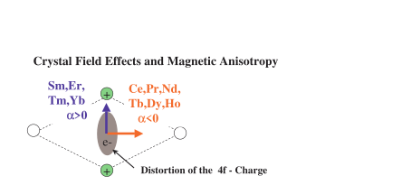

Next: Example - how to Up: singleion - a Crystal Previous: singleion - a Crystal Contents Index
The crystal field is the electrostatic field, which is produced by the charges of the crystal environment of a rare earth atom. It acts on the 4f electrons of the rare earth and causes magnetic anisotropy. Fig. 3 and 4 show the effect of this field on the charge distribution. Such plots can be made by using the programs pointc to calculate the crystal field parameters and display_density to plot the charge density, see section 19.
|  |
![\includegraphics[angle=0,width=0.7\columnwidth]{figsrc/chrgpla.eps}](img114.svg) |
We will describe now, how the crystal field influence can be quantitatively evaluated and how so1ion can help to do this. Within the ground state multiplet of the 4f electron wave function the crystal field can be described by the following Hamiltonian:
The first term in equ. 5 describes the crystal field, the second the
effect of a magnetic field (Zeeman term). The strength of the crystal field is given by the
crystal field parameters  . In the case of isolating materials these
parameters can be obtained by the point charge model (point charges on the
neighbouring atoms, for details on these calculations see [26],
in the McPhase suite use programs makenn and pointc to evaluate
the pointcharge model for a given crystal structure, see section 19).
For metals the conduction electrons screen the point charges and the determination
of the crystal field is usually only possible by fits to experimental data.
The program package McPhase may be used to solve such crystal field problems.
. In the case of isolating materials these
parameters can be obtained by the point charge model (point charges on the
neighbouring atoms, for details on these calculations see [26],
in the McPhase suite use programs makenn and pointc to evaluate
the pointcharge model for a given crystal structure, see section 19).
For metals the conduction electrons screen the point charges and the determination
of the crystal field is usually only possible by fits to experimental data.
The program package McPhase may be used to solve such crystal field problems.
A simpler way of dealing with crystal field anisotropy is to write instead of the first term in equ. 5
In order to implement a full diagonalisation of the single ion crystal field Hamiltonian the module so1ion(cfield, written by P. Fabi né Hoffmann) has been included into the program package. It can be used to calculate crystal field problems for rare earth ions. There is a program so1ion, which is self explaining, provided the user has a basic knowledge of crystal field theory (see e.g. the famous article by Hutchings [26]). Here we describe how to use the program singleion to do crystal field calculation for rare earth ions.